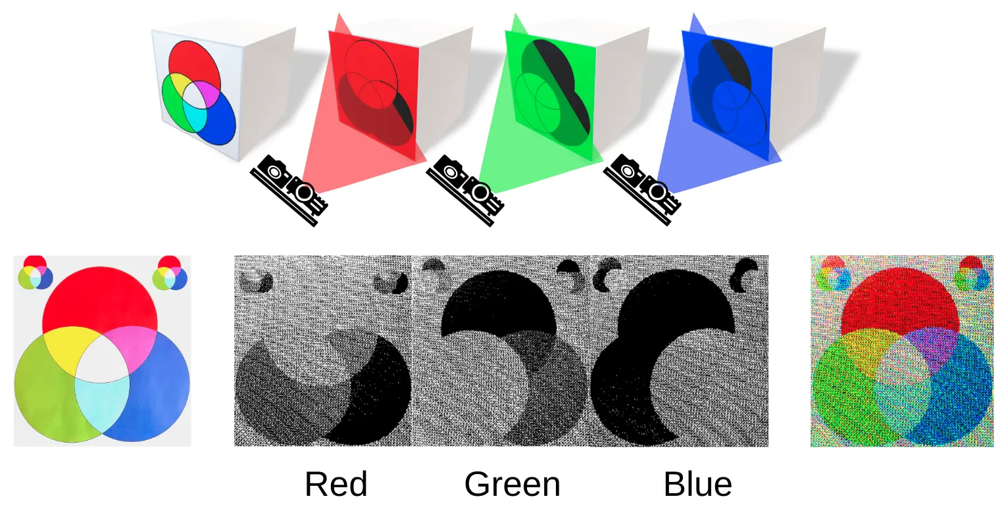

Event Based RGB D Perception
An event based, real time RGB D sensing system combining a monochrome event camera with a TI LightCrafter 4500 projector. Rapid structured light patterns enable independent color and depth measurements at the pixel level for both static and moving scenes, achieving color sensing equivalent to 1400 fps and pixel depth detection at 4 kHz.